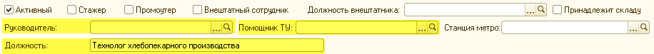
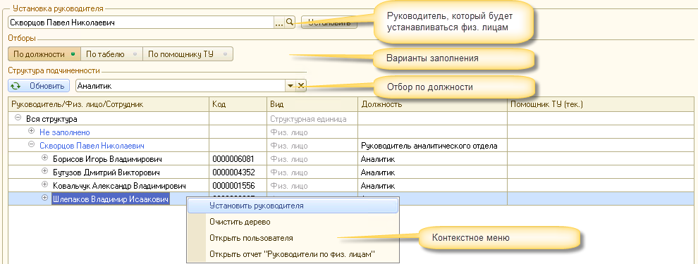
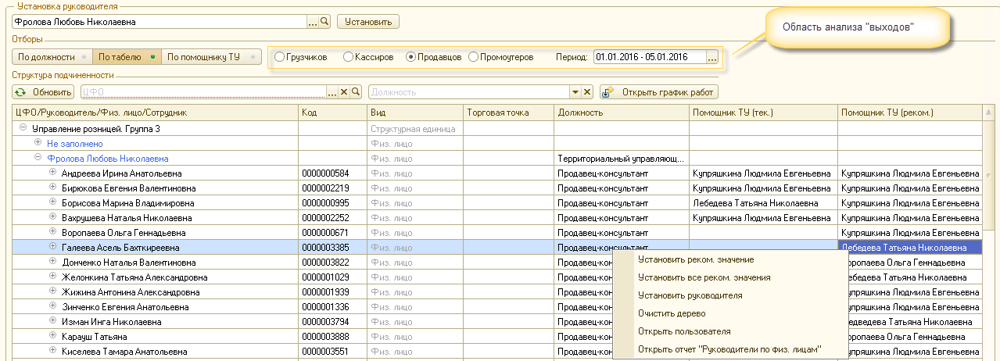
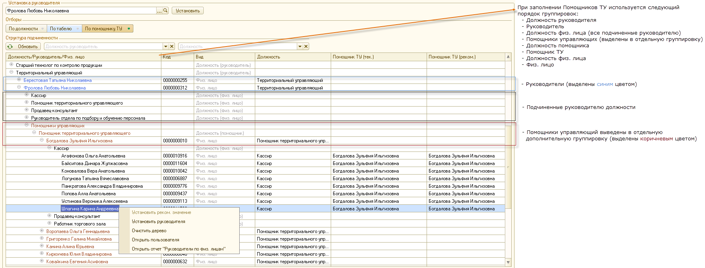

(поля, принимающие участие в группировках структуры подчиненности)

• Руководитель - используется для формирования основной структуры дерева подчиненности физ. лиц.
• Помощник ТУ - используется для формирования дополнительной ветки дерева подчиненности (учитывается при заполнении графиков Продавцов, Кассиров, Грузчиков, Промоутеров).
• Должность - используется для дополнительной группировки физ. лиц при построении дерева.
В обработке предусмотрено несколько вариантов заполнения структуры подчиненности физ. лиц:
• Замена руководителя - автоматическая замена одного руководителя на другого.
• Установка руководителя - анализ, замена и установка руководителей, а также помощников ТУ с отборами:
а) по должности - предназначен для заполнения руководителей для физ. лиц, которым не требуется установка помощников ТУ.
б) по табелю - предназначен для первоначального заполнения руководителей и помощников ТУ (в разрезе ЦФО), на основании выходов на работу за определенный период времени.
в) по помощникам ТУ - предназначен для анализа и заполнения структуры подчиненности физ. лиц в разрезе должностей, руководителей а также помощников ТУ.
Этот вариант следует использовать при необходимости групповой замены руководителя с одного на другого (например если у отдела изменился руководитель).
Вариант следует использовать при первоначальном заполнении структуры подчиненности (выполнено), а также изменении руководителей и помощников ТУ.

Контекстное меню
• Установить руководителя - Установка руководителя физ. лицам (можно выделять несколько строк с помощью клавиш "Ctrl" или "Shift")
• Очистить дерево - Очистка дерева структуры подчиненности.
• Открыть пользователя - Открытие элемента справочника Пользователи по текущему физ. лицу.
• Открыть отчет "Руководители по физ. лицам"- открытие отчета с отбором по текущему руководителю или физ. лицу (в зависимости от группировки, из которой запускается отчет).
Вариант предназначен для первоначального заполнения руководителей и помощников ТУ на основании выходов в согласно графиков.

Область анализа выходов
Поскольку в системе нет однозначной привязки физ. лица к ЦФО было принято решение заполнять руководителей и помощников ТУ на основании графиков работы физических лиц.
Предусмотрена возможность заполнить структуру на основании графиков "Грузчиков", "Кассиров", "Продавцов" и "Промоутеров".
Алгоритм заполнения анализирует отработанные дни для физ. лица (согласно указанного графика за выбранный период времени) и предлагает установить "рекомендуемого" Помощника и "Руководителя" по принципу наибольшего количества отработанных дней в той или иной торговой точке.
Дерево подчиненности
• ЦФО/Руководитель/Физ. лицо/Сотрудник - группировка данных в соответствующем порядке.
• Код - код руководителя, физ. лица или сотрудника (в зависимости от группировки).
• Вид - информационное поле, для описания вида текущей группировки.
• Торговая точка - торговая точка, в которой было отработано наибольшее к-во дней по графику за указанный период (отображение отключено).
• Должность - должность руководителя или физ. лица (в зависимости от группировки).
• Помощник ТУ(тек.) - установленный на текущий момент помощник ТУ.
• Помощник ТУ(реком.) - рекомендуемый "Помощник ТУ" для физ. лица (на основании максимального количества "выходов", согласно графика, при необходимости пользователь может указать другого).Контекстное меню
• Установить реком. значение - Установка помощника ТУ физ. лицам (можно выделять несколько строк с помощью клавиш "Ctrl" или "Shift").
ВАЖНО: Для установки реком. значения контекстное меню должно быть вызвано из колонки "Помощник ТУ (реком.)"!
• Установить все реком. значение - Установка всех рекомендованных помощников ТУ физ. лицам.
• Установить руководителя - Установка руководителя физ. лицам (можно выделять несколько строк с помощью клавиш "Ctrl" или "Shift").
• Очистить дерево - Очистка дерева структуры подчиненности.
• Открыть пользователя - Открытие элемента справочника Пользователи по текущему физ. лицу.
• Открыть отчет "Руководители по физ. лицам"- открытие отчета с отбором по текущему руководителю или физ. лицу (в зависимости от группировки, из которой запускается отчет)
Вариант предназначен для анализа и заполнения структуры подчиненности руководителей и помощников ТУ с дополнительными группировками по должностям.
Используется для отображения структуры подчиненности физ. лиц по установленным помощникам ТУ.

Дерево подчиненности
• Должность/Руководитель/Физ. лицо - группировка данных в соответствующем порядке
(Полный порядок: Должность руководителя, Руководитель, Должность физ. лица (все подчиненные руководителю), Помощники управляющих (выделены в отдельную группировку), Должность помощника, Помощник ТУ, Должность физ. лица, Физ. лицо).
• Код - код руководителя, физ. лица или сотрудника (в зависимости от группировки).
• Вид - информационное поле, для описания вида текущей группировки.
• Должность - должность руководителя или физ. лица (в зависимости от группировки).
• Помощник ТУ(тек.) - установленный на текущий момент помощник ТУ.
• Помощник ТУ(реком.) - новый помощник ТУ, который пользовалель может установить на свое усмотрение.Контекстное меню
• Установить реком. значение - Установка помощника ТУ физ. лицам (можно выделять несколько строк с помощью клавиш "Ctrl" или "Shift").
ВАЖНО: Для установки реком. значения контекстное меню должно быть вызвано из колонки "Помощник ТУ (реком.)"!
• Установить руководителя - Установка руководителя физ. лицам (можно выделять несколько строк с помощью клавиш "Ctrl" или "Shift").
• Очистить дерево - Очистка дерева структуры подчиненности.
• Открыть пользователя - Открытие элемента справочника Пользователи по текущему физ. лицу.
• Открыть отчет "Руководители по физ. лицам"- открытие отчета с отбором по текущему руководителю, должности или физ. лицу (в зависимости от группировки, из которой запускается отчет).ОБЩИЕ ПРИМЕЧАНИЯ
Карточку руководителя, физ. лица или сотрудника можно открыть "двойным кликом" на соответствующей ячейке дерева подчиненности.